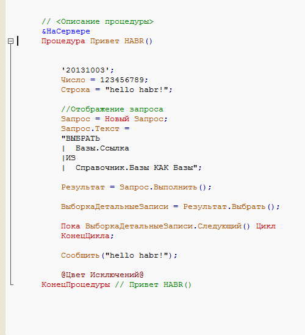
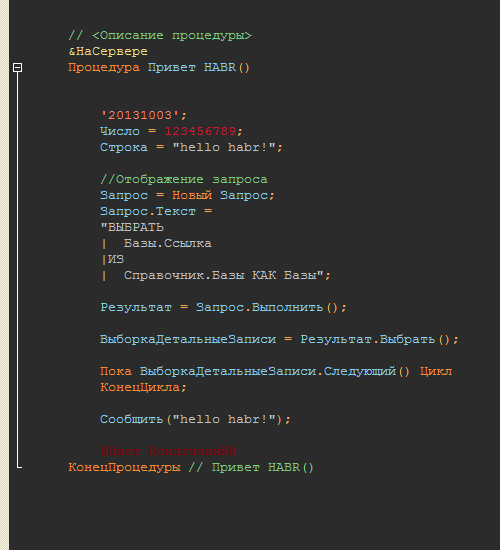
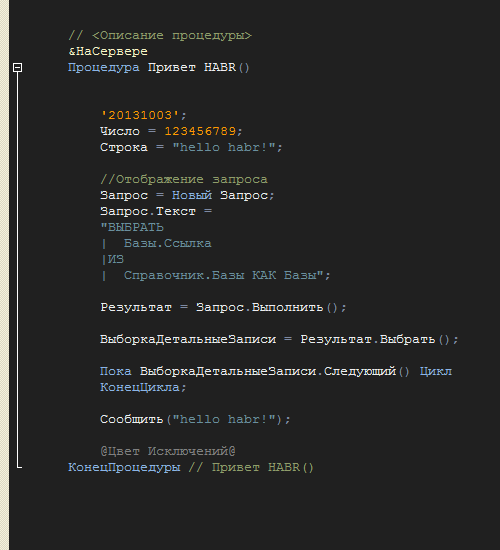
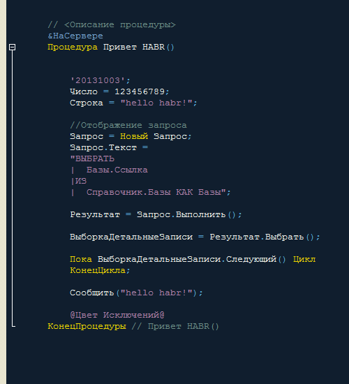

Меня, как представителя разработчика на платформе 1С, всегда смущала эстетическая сторона конфигуратора. Она стара как сам мир.
А ведь по сути это наше рабочее место. Место куда мы с вами смотрим добрую часть суток. И все однооразно. Нет передовых цветовых схем, которые призванны улучшить восприятие кода.
В то время как в современных средах разработки, динамично развиваються различные течения визуализации кода (и не только).
И хоть платформа 1С и не позволяет создавать различные темы, я постарался заполнить эту бреш.
Я взял популярные цветовые темы для Microsoft Visual Studio. http://studiostyl.es/schemes?page=1
и перевел их в 1С.
Для улучшения восприятия рекомендую увеличить размер шрифта до 12. Я бы порекомендовал поискать шрифта более приятного для разработки.
Примеры:
Coding Horror 2010

desertEx Revised

Mustang

Nina

и другие.